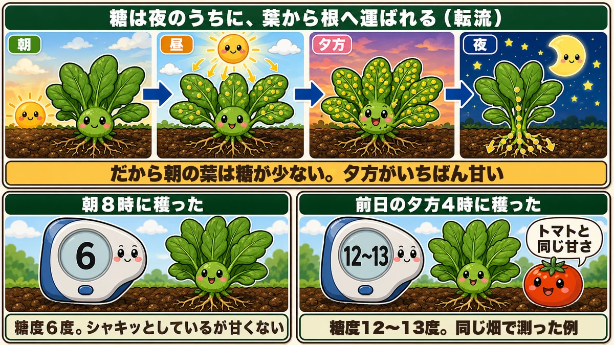
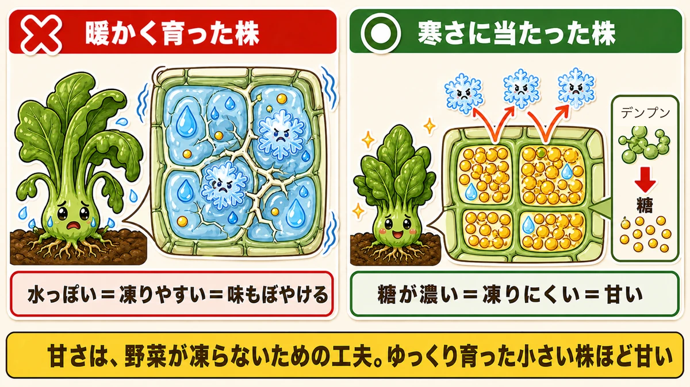
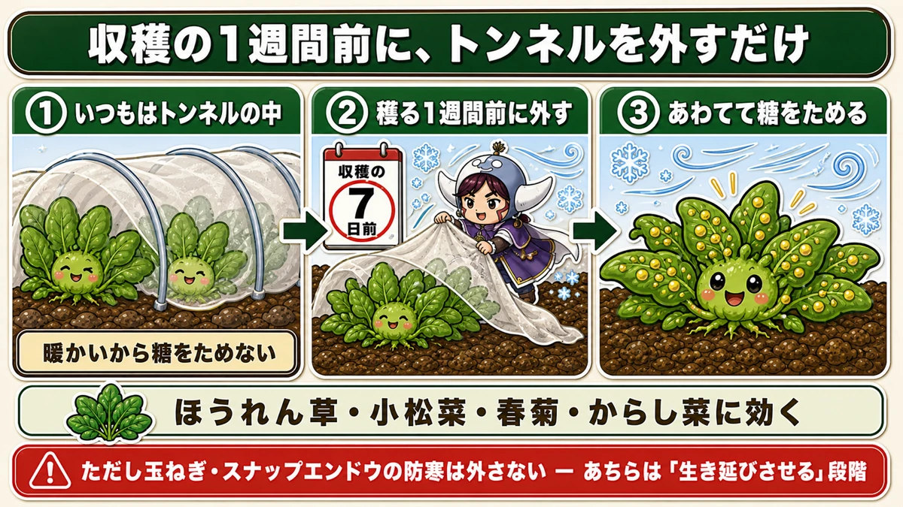
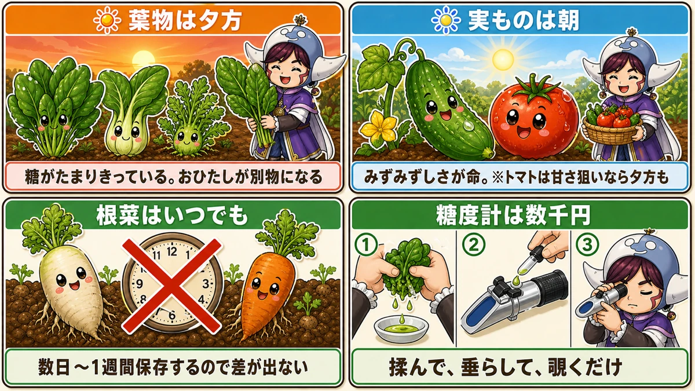
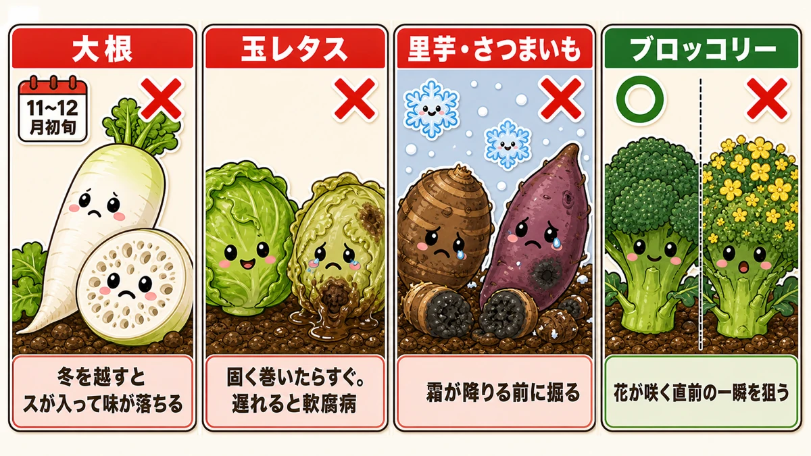
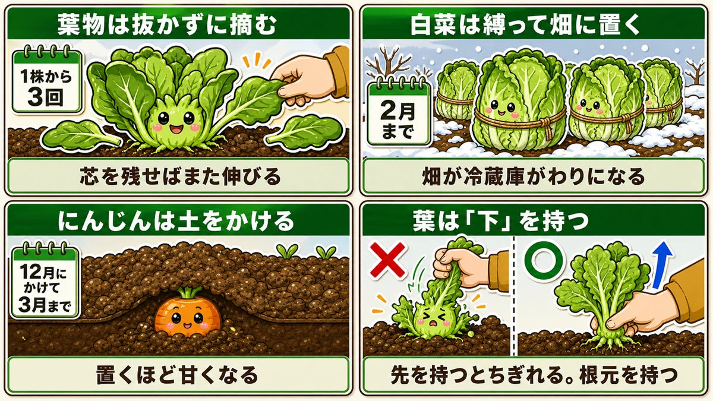

冬の野菜が甘くなる理由｜寒締めのやり方・朝と夕方の収穫の違い・甘くなる野菜と採りどき
どうも、8150（えいこう）です🌱 家庭菜園歴8年、理科の教員免許を持っていて、有機・無農薬で野菜を育てています。
📖 この記事の目次
この記事で分かること
- 冬の野菜が甘くなるのは、寒さで体の中の水が凍らないように、野菜が自分で糖を増やすからです。
- ほうれん草は、収穫の少し前にわざと寒さに当てる「寒締め（かんじめ）」をすると、甘みが増すと言われます。
- 葉物は、昼に作った糖が葉にたまっている夕方に採ると甘く、きゅうりやトマトなどの実は、朝に採るとみずみずしい、という使い分けがあります。
- ほうれん草、白菜、大根、にんじん、キャベツなど、冬の畑の野菜の多くが、寒さで甘くなります。
- 甘くなっても、採りどきを逃すと味は落ちます。大根はすが入り、葉物は花を咲かせようとしてかたくなります。
- 白菜を縛っておく、にんじんに土をかけておく、など、畑に置いたまま保存する方法もあります。
冬の畑でとれたほうれん草や大根を食べて、「お店のものより甘い！」と驚いたことはありませんか。
実はこれ、気のせいではないんです。冬の野菜は、寒さにあたることで、自分で甘みを増やしています。そのしくみを知っていると、もっと甘い野菜をとるための工夫ができるようになります。
この記事では、冬の野菜が甘くなる理由から、ほうれん草の寒締めのやり方、朝と夕方の採りどきの違い、甘さを逃さない収穫と保存のコツまで、順番に書いていきます。
早見：冬の野菜の甘さの基本（ひと目で分かる目安）
甘くなるしくみ
- 寒さにあたると、野菜は体の中の水が凍らないように、でんぷんを糖に変えて、糖の濃さを上げる
- 糖が溶けた水は凍りにくくなる（自分で不凍液を作るようなもの）
- その結果、冬の野菜は甘くなる
甘くなりやすい野菜
- ほうれん草（特に日本ほうれん草）
- 白菜
- 大根
- にんじん
- キャベツ
- 小松菜、春菊、スイスチャードなどの葉物
- ブロッコリー
寒締めのやり方（ほうれん草）
- 収穫できる大きさ（草丈10〜15cmくらい）まで育ったら
- トンネルや不織布を外して、冷たい外気に当てる
- 1〜2週間くらい当ててから収穫する（期間は説明が分かれる）
採る時間帯
- 葉物：夕方に採ると甘い
- きゅうり・トマトなどの実：朝に採るとみずみずしい
- 根菜：時間帯はあまり気にしなくていい

冬の畑のカレンダー（だいたいの目安）
- 11月：秋に植えた野菜がぐんぐん育つ。寒さが本格的になる前に、株を大きくしておく。里芋やさつまいもは霜の前に掘り上げる
- 12月：冬の野菜の収穫が本格的に。白菜は外葉を縛って霜よけ。大根やにんじんは、食べる分ずつ収穫
- 1月：いちばん寒い時期。寒さで甘みが増す。トンネルで育てているほうれん草は、まだ保温して大きくする
- 2月：ほうれん草の寒締め。春が近づいたら、とう立ち前に収穫を終える準備
地域によって前後します。寒い地域では、雪や凍結への備えも必要です。
作業の手順
ここからは、冬の野菜を甘く育てて、甘いうちに収穫するための流れを、順番に書いていきます。
手順1：冬に収穫する品種を選ぶ
甘い冬の野菜を楽しむなら、まず品種選びから始まります。
- ほうれん草：葉がぎざぎざした「日本ほうれん草」は、冬に収穫すると甘みが増しておいしい、と言われます。今は、日本ほうれん草と、丸い葉の西洋ほうれん草をかけ合わせた品種も多く、育てやすさと甘さを両立したものもあります
- 白菜：冬に収穫するなら、ゆっくり育つ中生〜晩生の品種が向いています
- にんじん：寒い時期に力を発揮すると説明される品種もあります
- キャベツ：冬どり向きの品種を選ぶと、寒さで甘みが増した玉を収穫できます
種袋に「冬どり」「寒さに強い」「甘みが増す」などと書かれているかを確かめて選んでください。
手順2：寒くなるまでに、しっかり育てる
冬に甘い野菜をとるためには、寒くなる前に、株をしっかり育てておくことが大切です。
寒くなると、野菜はほとんど育たなくなります。小さいまま冬を迎えると、甘くはなっても、収穫できる量が少なくなってしまいます。秋の種まきや植えつけを遅らせないことが、冬の甘い野菜の第一歩です。
秋のうちは、発芽や生育を助けるために、不織布やトンネルで保温することもあります。この保温は、株を大きく育てるためのものです。
手順3：寒さに当てて、甘くする
冬になって、株が収穫できる大きさに育ったら、今度は寒さに当てて甘くします。
ここで大事なのは、不織布やトンネルの使い方を切りかえることです。
- 育てているあいだ：保温して、株を大きくする
- 収穫が近づいたら：覆いを外して、冷たい外気に当てる
同じ不織布でも、「育てるために守る」ときと、「甘くするために外す」ときがある、ということです。ここを意識するだけで、冬の野菜の味はぐっと変わってきます。覆いをいつ外すかは、畑の野菜の大きさと、天気予報の寒さを見ながら決めてください。

冬の保温の使い分け
冬の野菜を育てるときは、保温の道具を目的に合わせて使い分けます。
- 不織布のべたがけ：野菜の上に直接ふんわりかける。霜よけや、寒風よけに。光と水を通すので、かけたまま育てられる
- ビニールトンネル：支柱でアーチを作って、ビニールをかぶせる。中の温度がぐっと上がるので、冬のあいだも株を育てられる
- 防虫ネットのトンネル：保温の力は弱いが、風や鳥よけにもなる
ほうれん草や小松菜を冬のあいだに大きく育てたいなら、ビニールトンネルで保温します。そして収穫が近づいたら、トンネルを外して寒締めする。これが、冬の葉物を甘く大きく育てる流れです。
晴れた日のトンネルの中は、冬でも暑くなることがあります。昼はすそを少し開けて換気し、夕方には閉めて保温してください。
秋の不織布は、育てるため
秋に種をまいた葉物やにんじんには、不織布をかけて、発芽や初めの育ちを助けることがあります。
- 発芽まで：土の乾燥を防ぎ、温度を保つ
- 小さいうち：寒風や霜から守る
- 虫よけ：秋はまだ虫が多いので、不織布や防虫ネットで覆う
にんじんのように、不織布を使わずに、株元に土を寄せて寒さから守る方法もあります。秋じゃがいもは、葉が元気なうちは防寒して葉を生かし、枯れ始めたら霜から芋を守るために早めに掘る、という使い分けがされます。
秋の覆いは「育てるため」、冬の終わりに外すのは「甘くするため」。目的を意識して使い分けてください。
手順4：ほうれん草の寒締め
寒締めは、収穫の少し前に、わざと寒さにさらして甘みを増やす方法です。ほうれん草でよく行われます。
- 草丈が10〜15cmくらい、収穫できる大きさに育っていることを確かめる
- トンネルで育てているなら、ビニールを外すか、すそを大きく開ける
- 冷たい外気に、1〜2週間くらい当てる
- そのあと収穫する
寒さに当たると、ほうれん草は葉を地面に広げるように、平たく開いて育つことがあります。これは、寒さに耐えているサインです。
ほうれん草の糖度は、ふつうは3〜4度くらいですが、寒締めをすると15度前後まで上がることがある、と紹介されることもあります。甘いりんごと同じくらいの甘さですね。

手順5：寒締めの期間を決める
寒締めの期間には、いくつかの説明があります。
- 関東などの地域で、2月にトンネルを外して、約2週間冷気に当ててから収穫する
- 日本ほうれん草を大きく育ててから防寒を外し、1週間寒風にさらしてから収穫する
- 収穫の1週間前に、覆いを外す
地域の寒さや、その年の気温によって変わります。寒さが厳しい地域なら短めに、暖かい冬なら長めに、と考えてください。
手順6：黒マルチも外す、という方法
暖かい冬で、なかなか寒さが当たらないときや、水はけが少し悪い畑では、トンネルを外すだけでなく、黒いマルチも外す、という方法も紹介されています。黒いマルチは、地温を上げて乾燥を防いでいるので、外すと土が冷えて、寒さがより伝わるという考え方です。
ただし、これは「そこまでやらなくてもいい」という前置きつきの追加の方法です。まずはトンネルを外すだけで試してみてください。
手順7：採る時間帯を選ぶ
冬の野菜は、採る時間帯でも味が変わります。
- 葉物（ほうれん草、小松菜など）：夕方に採ると甘い
- きゅうり、トマトなどの実：朝に採るとみずみずしい
- 根菜（大根、にんじんなど）：時間帯はあまり気にしなくていい
葉物は、昼のあいだに光合成で作った糖が、夕方には葉にたまっています。晴れた日ほど、たくさんの糖が作られます。夜になると、その糖は根や体のほかの部分へ運ばれていきます。だから、朝に採った葉物はシャキッとみずみずしく、夕方に採った葉物は甘みが強い、というわけです。
ほうれん草で、朝と夕方の糖度を測り比べてみたところ、夕方のほうがかなり高かった、という話もあります。

手順8：採りどきを逃さない
甘くなった野菜も、採りどきを逃すと、味が落ちてしまいます。
- 大根：冬を越して春が近づくと、根の中に空洞（す）ができたり、花を咲かせようとして茎が伸びてきたり（とう立ち）して、かたくなる
- ほうれん草：春が近づくと、とう立ちして葉がかたくなる
- 玉レタス：かたく巻いたら、すぐに収穫する
- ブロッコリー：つぼみが開いて黄色い花が咲く前に収穫する
- 里芋・さつまいも：霜が降りる前に掘り上げる（霜にあたると傷む）

手順9：採り方でも、味を保つ
- 葉物：株ごと抜かずに、外側の葉から摘みとると、長く収穫できる
- 白菜：外側の葉をひもで縛って、頭をまとめておくと、寒さや霜から守れて、畑に置いたまま少しずつ収穫できる
- にんじん：葉を切り、上から土をかけておくと、畑に置いたまま保存できる
- 葉物を持つとき：葉の先ではなく、根元のほうを持つと、葉を傷めにくい

冬の野菜を甘く育てる5つのコツ
- 秋のうちに株を大きく育てておく
- 冬の野菜に向いた品種を選ぶ
- 収穫が近づいたら、覆いを外して寒さに当てる
- 葉物は夕方に収穫する
- 春の気配を感じたら、とう立ち前に収穫を終える
トンネルの中のアブラムシに注意
ビニールトンネルの中は、冬でも暖かく、雨や風も当たりません。野菜にとってはありがたい環境ですが、アブラムシにとっても住みやすい場所になります。
冬は虫が少ないと思いがちですが、トンネルの中では、アブラムシが静かに増えていることがあります。晴れた日に換気するついでに、葉の裏ものぞいてみてください。寒締めでトンネルを外すときにも、虫がついていないか確かめておきましょう。
野菜ごとの甘さのポイント
ほうれん草
冬の甘さの代表です。寒締めで、いちばん違いが分かりやすい野菜でもあります。日本ほうれん草は、冬に収穫すると甘みが増し、茎の根元が赤くなります。この赤い部分に、糖がたまっていると言われます。
白菜
寒さにあたると、甘みが増します。外葉を縛って畑に置いておけば、冬のあいだ少しずつ収穫できます。鍋に入れると、冬の白菜の甘さがよく分かりますよ。外側の葉より、内側の黄色い葉のほうが、甘みが強いと感じる方も多いと思います。
大根
冬の大根は、甘くてみずみずしいと言われます。ただし、春が近づくとすが入ったり、とう立ちしたりするので、冬のうちに収穫を終えるのが目安です。
にんじん
雪の下で冬を越したにんじんは、とても甘い、という話がよく聞かれます。寒さから身を守るために、体の中で糖を作るからです。畑に土をかけて保存しておくと、冬のあいだ甘いにんじんが楽しめます。
キャベツ
冬どりのキャベツは、寒さで甘みが増します。種袋に糖度が書かれている品種もあります。
スイスチャード
赤や黄色、白のカラフルな茎がきれいな葉物です。真冬に収穫すると、苦みが少なく、甘みが詰まっている、と説明されます。
小松菜・春菊・水菜
冬の小松菜は、寒さにあたると、葉が厚くなって甘みが増します。春菊は、寒さで香りがおだやかになり、えぐみが少なくなると言われます。水菜も、冬に収穫すると、シャキシャキとした食感と甘みが楽しめます。
どれも、外側の葉から摘みとるか、株ごと収穫して、冬のあいだ少しずつ楽しめます。
ブロッコリー・芽キャベツ
ブロッコリーは、寒さにあたると、つぼみが紫っぽく色づくことがあります。これは、寒さから身を守るための色素で、食べても問題ありません。ゆでると緑色に戻ります。
芽キャベツは、寒さにあたると甘みが増す野菜のひとつです。茎のまわりについた小さなキャベツを、下から順に収穫していきます。
ねぎ・かぶ
冬のねぎは、寒さにあたると、白い部分がやわらかく、甘くなります。焼くと、とろりとした甘さが楽しめます。冬のねぎは、鍋に欠かせない名脇役ですね。鍋に入れると、とろっとした甘さが楽しめます。
かぶも、冬に収穫すると甘みが増します。煮物にすると、やわらかく、甘みが引き立ちます。根だけでなく、葉もおいしく食べられます。
いちごの甘さは、葉で決まる
いちごも、冬から春にかけて甘くなる果物ですが、甘くするためのポイントは少し違います。
いちごの甘さは、葉で作られた糖が、実に送られて決まります。だから、葉を大きく元気に育てて、光合成をたっぷりさせることが大切だ、と説明されます。そのためには、植えつけを遅らせないこと、極端に乾燥させないことが大事です。寒さに当てて甘くする葉物や根菜とは、考え方が違うんですね。
さつまいもは、別のしくみ
さつまいもも甘い野菜ですが、甘くなるしくみは少し違います。さつまいもは、掘り上げたあと、しばらく保存しておくことで、でんぷんが糖に変わって甘くなります。冬の畑で寒さに当てて甘くするのとは、別の話です。
鳥から守る方法
- 防鳥ネット：野菜全体を覆う。すそをしっかり押さえて、鳥が下からもぐりこまないようにする
- テグス（細い釣り糸）：支柱を立てて、野菜の上に何本か張る。鳥が羽を引っかけるのをいやがって、寄りにくくなる
- 不織布：かけておくと、鳥から葉が見えにくくなる
冬のブロッコリーや白菜、キャベツは、ヒヨドリに特にねらわれやすい野菜です。葉が食べられ始めたら、すぐに対策をしてください。
畑での保存のしかた
冬の野菜は、畑に置いたまま保存できるものが多くあります。食べる分ずつ収穫すれば、いつでも新鮮な野菜が楽しめます。
大根
- 寒さが厳しくなる前に、葉を切り落とす
- 土を掘って、大根を斜めに寝かせるように埋め、上から土をかぶせる（土中保存）
- または、畑に植えたまま、首の部分に土を寄せて寒さから守る
土の中は、外の空気より温度が安定しているので、凍りにくく、乾きにくくなります。
にんじん
- 葉を短く切って、上から土をかぶせておく
- 食べる分ずつ掘り上げる
にんじんは、土をかけておけば、冬のあいだ畑で保存できます。寒さにあたって、ますます甘くなりますよ。掘りたてのにんじんを、生でかじってみると、その甘さに驚くはずです。
白菜
- 外側の葉を持ち上げるように集めて、上のほうをひもで縛る
- 霜や寒風から、中の葉を守れる
- 食べるときに、1株ずつ収穫する
縛っておくと、外側の葉が傷んでも、中はきれいなまま保てます。
ねぎ
- 畑に植えたまま、土を寄せておく
- 食べる分ずつ掘り上げる
ねぎは寒さに強いので、冬のあいだ畑に置いておけます。
甘い野菜は、鳥にも狙われる
冬は、鳥の被害が増える
冬の野菜が甘くなると、それをねらってくるのが鳥です。特にヒヨドリは、冬になると、ブロッコリーや白菜の葉をぼろぼろに食べてしまうことがあります。
冬は、鳥にとってもえさが少ない季節です。そこへ甘い葉物が並んでいるわけですから、ごちそうに見えるんですね。甘く育った証拠でもあるのですが、せっかく育てた野菜を食べられてしまうのはくやしいですよね。寒締めでトンネルを外すときも、鳥の被害が出やすい畑なら、防鳥ネットをかけておくと安心です。
冬の収穫のときの注意
- 霜が降りた朝は、葉が凍っていて傷みやすいので、日が高くなってから収穫する
- 凍った野菜を、凍ったまま強くさわったり、折り曲げたりしない
- 収穫したら、乾燥しないように新聞紙で包んで、涼しい場所に置く
- 土のついた根菜は、洗わずに保存すると長持ちする
冬は、収穫したあとの保存にも向いた季節です。畑と台所をうまく使い分けて、甘い冬の野菜を長く楽しんでください。
失敗の見分け方
寒締めしたのに、甘くならなかった
- 寒さに当てる期間が短かった
- その冬が暖かく、十分に冷えなかった
- 株が小さすぎた
- 採る時間帯が朝だった（葉物は夕方のほうが甘い）
寒締めしたら、葉が傷んだ
急に強い寒さに当てると、葉が凍って傷むことがあります。特に、トンネルの中で暖かく育っていた株を、いきなり厳しい寒さにさらすと傷みやすいです。寒さが厳しい地域では、すそを開けて少しずつ外気に慣らす、不織布に切りかえる、などの方法もあります。
葉が赤紫っぽくなった
ほうれん草やキャベツ、ブロッコリーの葉が、寒さで赤紫っぽくなることがあります。これは、寒さから身を守るための色素が増えたためで、多くの場合は心配いりません。暖かくなれば、新しい葉は元の色に戻ります。
大根にすが入っていた
収穫が遅れて、春が近づいた可能性があります。冬のうちに収穫を終えるか、畑で保存するなら、葉を切って土をかけておく方法を試してみてください。
ほうれん草がかたくなった
とう立ちが始まっている可能性があります。春が近づいたら、早めに収穫を終えましょう。
説明が分かれていること
寒締めの期間：1週間か、2週間か
- 関東などで、約2週間冷気に当ててから収穫する、という説明
- 日本ほうれん草を、1週間寒風にさらしてから収穫する、という説明
- 収穫の1週間前に覆いを外す、という説明
地域や品種、その年の寒さで変わります。1週間から2週間くらい、と幅をもって考えてください。
黒マルチまで外すか
- トンネルを外すだけで十分、という考え方
- 暖かい冬や水はけの悪い畑では、黒マルチも外すと、より寒さが伝わる、という考え方
黒マルチを外す方法には、話している人自身が「諸説ある」「そこまでやらなくてもいい」と前置きしています。必須の作業ではありません。
甘さの数字
ほうれん草の糖度について、「ふつうは3〜4度、寒締めで15〜17度くらいまで上がると言われる」という紹介や、「朝と夕方で10度近く差があった」という測定の話があります。
ただ、これらは測った条件がそれぞれ違うので、「必ずこの数字になる」とは考えないでください。甘さが増す傾向がある、という目安として受け取ってください。
加熱すると甘くなるのか
キャベツなどを加熱すると甘くなる、という話もあります。ただ、話している人自身が、「糖度が上がるというより、甘く感じる」と言い直しています。加熱で甘く感じることと、寒さで糖度が上がることは、別の話として考えてください。
よくある質問
Q. 寒締めは、ほうれん草以外でもできますか？
A. 小松菜や春菊、白菜、キャベツなど、冬の葉物の多くは、寒さにあたると甘みが増します。ほうれん草ほど違いがはっきり分からないこともありますが、覆いを外して寒さに当ててから収穫する、という考え方は同じです。
Q. 糖度計はどこで買えますか？
A. 果物や野菜の糖度を測る「屈折式の糖度計」は、数千円くらいから手に入ります。園芸店やインターネットの通信販売などで探してみてください。野菜をしぼった汁を数滴たらして、のぞくだけで糖度が分かります。朝と夕方、寒締めの前と後で測り比べてみると、甘さの変化が数字で見えて楽しいですよ。
Q. 雪が積もっても大丈夫ですか？
A. ほうれん草や白菜、大根、にんじんなどは、雪の下でも冬を越せることが多いです。雪がかぶると、かえって強い寒風や凍結から守られることもあります。ただ、重い雪で葉が折れたり、雪が解けたあとに傷んだりすることもあるので、ようすを見ながら早めに収穫してください。
Q. 霜にあたった野菜は、食べても大丈夫ですか？
A. 霜にあたって少し葉が傷んだくらいなら、傷んだ部分を取り除けば食べられます。むしろ、霜にあたるような寒さを経験した葉物は、甘みが増していることが多いです。ただ、里芋やさつまいもは、霜にあたると芋が傷みやすいので、霜が降りる前に掘り上げてください。
Q. お店のほうれん草より、自分で育てたほうが甘いのはなぜですか？
A. 冬の畑で寒さにじっくり当たったほうれん草は、甘みが増しています。お店に並ぶほうれん草の多くは、ハウスなどで寒さにあまり当たらずに育っていたり、収穫から時間がたっていたりします。また、夕方に採って、その日のうちに食べれば、葉にたまった糖を逃さずに味わえます。収穫してすぐに食べられるのは、家庭菜園ならではのぜいたくですね。
Q. 寒締めのタイミングが分かりません
A. 株が収穫できる大きさに育っていて、冬の寒さがいちばん厳しい時期を少し過ぎたころ（2月ごろ）が、ひとつの目安です。株が小さいうちに寒さに当てると、育ちが止まってしまうので、まずは大きく育ててから、と考えてください。
Q. 冬の葉物が、鳥に食べられてしまいました
A. 冬は鳥のえさが少ないので、甘くなった葉物はねらわれやすくなります。防鳥ネットや不織布で覆うか、テグスを張って守ってください。食べられた外葉は、株が元気なら、また内側から新しい葉が育ってきます。
Q. 暖かい地域でも、冬の野菜は甘くなりますか？
A. 寒さが弱いぶん、甘みの増え方は控えめになることがあります。それでも、冬の夜の冷えこみで、ある程度は甘くなります。寒締めでトンネルを外したり、夕方に収穫したりする工夫を組み合わせると、甘さを引き出しやすくなります。
Q. プランターでも、冬の野菜は甘くなりますか？
A. なります。ベランダのプランターでも、冬の寒さにあたれば、ほうれん草や小松菜は甘みが増します。ただ、プランターは土の量が少ないので、畑より凍りやすく、乾きやすいです。厳しい寒さの夜は、プランターを壁ぎわに寄せたり、不織布をかけたりして守ってください。収穫の前に、数日間しっかり外の寒さに当てると、寒締めの効果が期待できます。
Q. 寒締めの前と後で、見た目は変わりますか？
A. 寒さにあたったほうれん草は、葉が地面に広がるように平たく開き、葉が厚く、色が濃くなることが多いです。日本ほうれん草なら、根元の赤みが強くなることもあります。見た目は少しごつごつしますが、そのぶん甘みがぎゅっと詰まっています。
Q. 冬の大根は、いつまで畑に置いておけますか？
A. 地域にもよりますが、寒さが厳しいうちは、畑に置いたまま少しずつ収穫できます。春が近づいて暖かくなってくると、すが入ったり、とう立ちしたりし始めるので、それまでに収穫を終えるのが目安です。気になる場合は、土中保存に切りかえてください。
Q. 冬の葉物は、どうやって収穫すると長く楽しめますか？
A. 株ごと抜かずに、外側の大きな葉から、必要な分だけかきとるように収穫すると、内側の新しい葉がまた育って、冬のあいだ長く楽しめます。小松菜や春菊、スイスチャードなどで使える方法です。ほうれん草は、株ごと収穫することが多いですが、大きい株から順に抜いていけば、残った株がまた大きくなります。
Q. 寒さで、葉がしおれたようにぐったりしています
A. 霜が降りた朝などは、葉の中の水が冷えて、一時的にぐったりして見えることがあります。日が当たって気温が上がると、元に戻ることが多いので、あわてずようすを見てください。霜で葉がしおれているときに触ると、葉が傷みやすいので、日が高くなってから作業するのがおすすめです。
Q. 冬の水やりは、どれくらい必要ですか？
A. 冬は土が乾きにくいので、畑の野菜には、ほとんど水やりはいりません。晴れが続いて土がからからに乾いたときだけ、暖かい日の午前中に水をやってください。夕方に水をやると、夜のあいだに土が凍ることがあります。トンネルの中は雨が当たらないので、ときどき土の乾き具合を確かめてください。
Q. 冬の野菜にも、肥料は必要ですか？
A. 寒い時期は、野菜の育ちがゆっくりになるので、肥料もあまり使いません。秋のうちに追肥をしておけば、冬のあいだは追加しなくても大丈夫なことが多いです。冬に肥料をやりすぎると、かえって寒さに弱くなる、とも言われます。
Q. 冬に種をまいても、甘い野菜はできますか？
A. 冬は寒くて、種をまいても芽が出にくく、育ちもゆっくりです。冬に甘い野菜を収穫するなら、秋のうちに種をまいて、寒くなる前に大きく育てておくのが基本です。冬にまくなら、トンネルで保温して、春の収穫を目指してください。
Q. 寒締めしたほうれん草は、どう食べるのがおすすめですか？
A. 甘みが増しているので、さっとゆでて、おひたしやごまあえにすると、甘さがよく分かります。寒締めしたほうれん草は、葉が厚くなっていることが多いので、ゆですぎないのがコツです。
Q. 子どもと一緒に、甘さを確かめる方法はありますか？
A. 朝に採ったほうれん草と、夕方に採ったほうれん草を、それぞれ少しゆでて食べ比べてみてください。糖度計があれば、数字でも比べられます。寒締めをした株と、トンネルの中に置いたままの株で比べるのもおもしろいですよ。
学ぶ🔬 工場を食べるか、倉庫を食べるか
ここからは、冬の野菜の甘さのしくみについて、少しだけ深く書いておきます。読み飛ばしても大丈夫です。
葉は工場、根は倉庫
植物の葉は、光を受けて糖を作る「工場」のようなものです。作られた糖は、夜のあいだに、根や茎などの「倉庫」へ運ばれて、でんぷんとしてたくわえられます。
葉物を食べるということは、工場を食べているということ。工場の中の糖の量は、作っている昼と、運び出したあとの朝とで、大きく変わります。だから、葉物は採る時間で味が変わるんです。
なぜ根菜は、時間帯を気にしなくていいのか
大根やにんじんなどの根菜は、倉庫を食べている野菜です。倉庫には、昼も夜も、たくわえられたものがたまっています。だから、採る時間帯で味が大きく変わることはありません。
根菜を甘くするのは、時間帯より、寒さです。寒さにあたると、倉庫のでんぷんを糖に変えて、凍らないようにする。冬の大根やにんじんが甘いのは、このためです。
なぜ糖があると、凍りにくいのか
水は0度で凍りますが、砂糖や塩が溶けた水は、0度より低い温度にならないと凍りません。濃い砂糖水ほど、凍りにくくなります。
野菜は、寒さを感じると、体の中のでんぷんを糖に変えて、細胞の中の水の糖の濃さを上げます。そうすることで、細胞の中の水が凍りにくくなり、細胞が凍って壊れるのを防いでいるんです。冬の野菜の甘さは、野菜が寒さから身を守るための、知恵の結果なんですね。
なぜ冬は、育ちがゆっくりになるのか
植物が光合成で糖を作る働きは、温度が低いとにぶくなります。また、冬は日が短く、光の量も少なくなります。作れる栄養が少ないので、体を大きくするスピードもゆっくりになるんです。
そのかわり、冬の野菜は、作った糖を、体を大きくすることより、寒さから身を守ることに使います。だから、冬の野菜は、大きくはならなくても、甘みがぎゅっと詰まっているんですね。
日本ほうれん草と西洋ほうれん草
ほうれん草には、葉の先がとがってぎざぎざした「日本ほうれん草（東洋種）」と、葉が丸くて厚い「西洋ほうれん草（西洋種）」があります。
日本ほうれん草は、寒さに強く、冬に収穫すると甘みが増して、とてもおいしいと言われます。ただ、暑さに弱く、春になるとすぐにとう立ちしやすい性質があります。西洋ほうれん草は、育てやすく、とう立ちしにくいのが特徴です。
今は、両方のよいところを合わせた品種がたくさんあります。冬の甘さを楽しみたいなら、日本ほうれん草の血を引く品種を選んでみてください。
なぜ春が近づくと、とう立ちするのか
ほうれん草や大根などは、冬の寒さを経験したあと、日が長くなってくると、それを合図に花を咲かせようとします。花を咲かせるための茎（とう）を伸ばし始めると、葉や根にたくわえていた栄養が、花のほうへ回されていきます。
その結果、葉はかたくなり、根にはすが入って、味が落ちてしまうんです。冬の野菜を甘いうちに収穫するには、春の気配を感じたら、早めに収穫を終えることが大切です。
糖度計は、光の曲がり方で甘さを測る
糖度計（屈折式）は、光が液体を通るときに曲がる性質を利用しています。糖がたくさん溶けた液体ほど、光が大きく曲がります。その曲がり具合を読みとって、糖度として表示しているんです。
野菜の汁を数滴たらすだけで測れるので、寒締めの前と後、朝と夕方、品種の違いなどを、数字で比べることができます。目に見えない甘さが数字で分かると、畑の工夫がもっと楽しくなりますよ。
なぜ朝の実はみずみずしいのか
夜のあいだ、野菜は根から水を吸い上げて、実や葉にたくわえます。昼になると、葉から水分がどんどん蒸発していきます。
だから、朝の実は水分をたっぷり含んでいて、みずみずしいんです。きゅうりやトマトを朝に採るとおいしいと言われるのは、このためです。
まとめ
ここまで読んでくださって、ありがとうございます！
冬の野菜が甘くなるポイントを、もう一度まとめておきます。
- 冬の野菜は、凍らないように、でんぷんを糖に変えて甘くなる
- 寒くなる前に、株をしっかり育てておく
- 育てるときは守り、収穫が近づいたら覆いを外して寒さに当てる
- ほうれん草の寒締めは、収穫できる大きさで、1〜2週間外気に当てる
- 葉物は夕方、実は朝、根菜は時間を気にしなくていい
- 採りどきを逃すと甘さは消える。大根のす、葉物のとう立ちに注意
- 白菜は縛って、にんじんは土をかけて、畑で保存
- 甘い冬の野菜は、鳥にも狙われる
冬の畑は、寒くて作業がつらい季節ですが、その寒さこそが、野菜をおいしくしてくれます。夕方に採る、寒さに当てる、採りどきを逃さない。ちょっとした工夫で、冬の食卓がぐっと豊かになります。
まずは、ほうれん草を夕方に1株採って、朝に採ったものと食べ比べてみてください🥬
屈折式糖度計（Brix 0〜32%）
この記事の主役です。朝と夕方のほうれん草を測ると、6度と12度がその場で出ます。葉を揉んで、汁をたらして、覗くだけ。お子さんの自由研究にも、これ以上ないと思います。
![[商品価格に関しましては、リンクが作成された時点と現時点で情報が変更されている場合がございます。]](https://hbb.afl.rakuten.co.jp/hgb/56d214ed.82e55a39.56d214ee.0964bf9a/?me_id=1335769&item_id=10000348&pc=https%3A%2F%2Fthumbnail.image.rakuten.co.jp%2F%400_mall%2Fgood-item%2Fcabinet%2F06374369%2Fcompass1553596495.jpg%3F_ex%3D240x240&s=240x240&t=picttext "[商品価格に関しましては、リンクが作成された時点と現時点で情報が変更されている場合がございます。]")

不織布
寒締めは「収穫の1週間前に外す」作業なので、まずかけておくものが要ります。かけっぱなしにできるので、外すタイミングだけ考えればよくなります。
![[商品価格に関しましては、リンクが作成された時点と現時点で情報が変更されている場合がございます。]](https://hbb.afl.rakuten.co.jp/hgb/56bc237a.e97551b1.56bc237b.2513ed10/?me_id=1310260&item_id=10000879&pc=https%3A%2F%2Fthumbnail.image.rakuten.co.jp%2F%400_mall%2Fdiokasei%2Fcabinet%2F007fusyokufu%2F12g%2Fimgrc0092049705.jpg%3F_ex%3D240x240&s=240x240&t=picttext "[商品価格に関しましては、リンクが作成された時点と現時点で情報が変更されている場合がございます。]")
剪定バサミ（収穫用）
葉物を抜かずに摘むとき、外葉をきれいに切れると株が傷みません。切り口がつぶれると、そこから傷みが入ります。
![[商品価格に関しましては、リンクが作成された時点と現時点で情報が変更されている場合がございます。]](https://hbb.afl.rakuten.co.jp/hgb/56d22030.def85fa7.56d22031.b89fde86/?me_id=1250472&item_id=10022339&pc=https%3A%2F%2Fthumbnail.image.rakuten.co.jp%2F%400_mall%2Fplantz%2Fcabinet%2F01%2Ft-13.jpg%3F_ex%3D240x240&s=240x240&t=picttext "[商品価格に関しましては、リンクが作成された時点と現時点で情報が変更されている場合がございます。]")